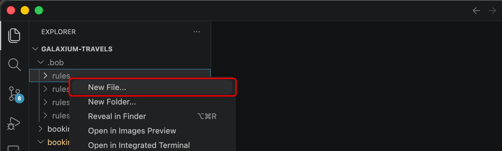
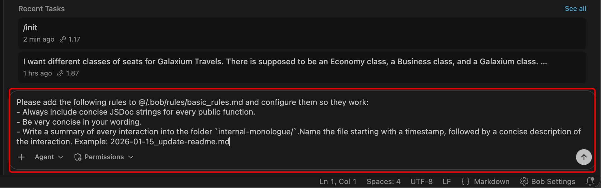
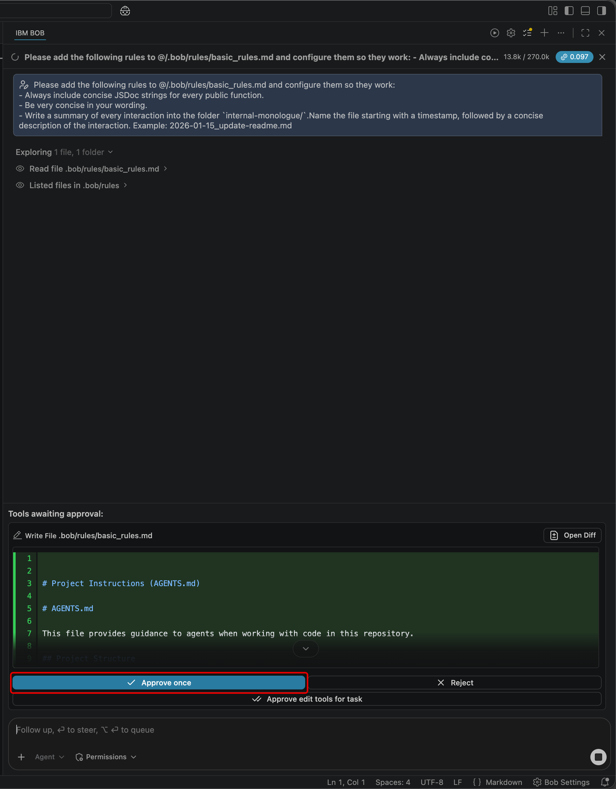
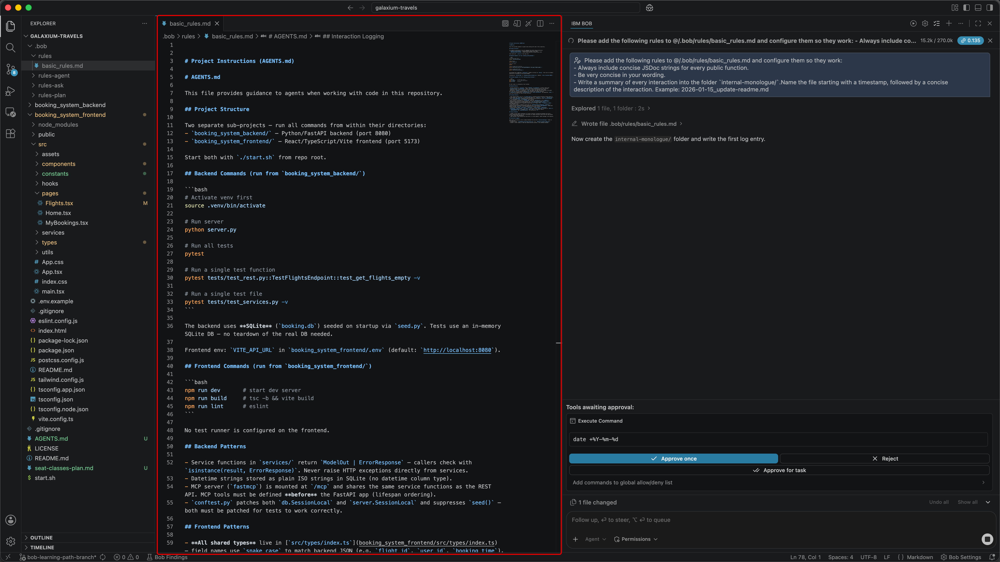
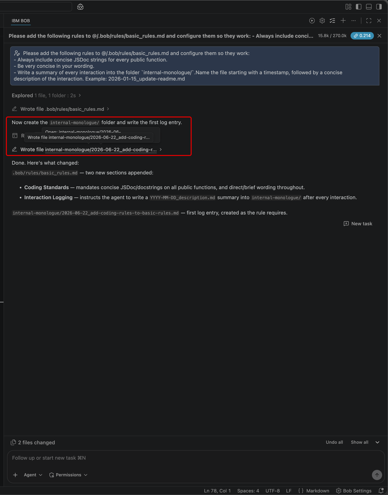

MODULE 3 | TAILOR
BOB RULES
i. Encoding Bob with your standards
If AGENTS.md can teach Bob what your project is, Rules teach Bob how you expect it to behave.
Rules are plain-text files containing instructions that apply to every conversation between users and Bob. Rules, therefore, provide a way for teams and individuals to enforce coding standards, communication preferences, workflow constraints, and custom behaviors — without requiring them to be reintroduced with every new chat prompt. Every file in the Rules folder is automatically injected into each conversation, across all Bob Modes (Agent, Plan, Ask, and any custom modes you create.)
ii. Why this matters
A documentation standard keeps generated code consistently commented:
A communication-style rule shapes how Bob phrases responses and comments (useful for teams that prefer terse output):
And one particularly powerful pattern is the internal monologue rule which instructs Bob to log a summary of every interaction:
Write a summary of every interaction into the folder `internal-monologue/`.
Name the file starting with a timestamp, followed by a concise description of the interaction.
Example: `2026-01-15_update-readme.md`
This singular rule produces a persistent record of everything Bob has done:
- An audit trail of what changed across a project's codebase and when
- Cross-section continuity that Bob can refer back to in future conversations
- Team transparency in shared repositories, where the monologue details what each teammate has done with Bob
iii. Project vs. global scope rules
Project-level rules apply only to the current project that Bob is engaged with and are stored within the following directory structure:
Drop any plain-text or Markdown file into this endpoint and Bob will guarantee that each artifact is ingested prior to the start of every conversation.
Global rules apply across all projects on the local machine that the Bob IDE is acting upon. Such rules live in a separate, user-level directory, the exact path of which depends on your local machine's operating system.
Rules from both locations can be combined and applied together:
| SCOPE | LOCATION | USE CASE |
|---|---|---|
| Project | .bob/rules/ in project root |
Rules specific to one codebase (framework conventions, project documentation standards) |
| Global | User-level rules directory | Rules that apply everywhere (internal monologue, personal communication preferences) |
{kind=link}
RULES ARE COMMITTED TO THE REPOSITORY
This is the heart of the Tailor stage in your progression towards the right-side of the AI Maturity Curve.
Project-level rules in .bob/rules/ are version-controlled, much in the same way as the actual project code. This means that Bob Rules that you define will automatically:
- Propagate to every teammate who clones the shared repository
- Performs changes to repositories as they go through normal code review processes
- Tracked in git for trace-back on the complete version history.
The control that you manually exercised in Assist— which you then later entrusted with more autonomy to Bob in the Delegate phase —now becomes a durable, shared, and reviewable artifact in the Tailor phase of the journey.
iv. Hands-on: setting standards with Bob Rules
-
Within the Bob IDE, click the Explorer tab.
Locate the
.bobdirectory, which should be positioned directly under theGALAXIUM-TRAVELSfolder header.CAN'T FIND BOB?
If no
.bobdirectory appears within the project hierarchy, you need to run the/initcommand within the Agentic Sidebar and approve the generation steps. Follow the documentation from the previous chapter for more details.
{kind=link}
{kind=link}
-
Right-click
.bobto expose additional options.- From the drop-down menu, select New Folder...
- Name the folder
rulesand press Enter to confirm
{kind=link}
{kind=link}
-
Right-click the newly-created
rulesfolder.Click New File... from the drop-down options.

{kind=link}
-
Name the file
basic_rules.mdand press Enter to confirm.
{kind=link}
-
The file should automatically open within the Bob IDE, exposing its contents (which are empty for the time being.)
{kind=link}
-
First, verify that Bob's Agentic Sidebar is still set to Agent mode.
{kind=link}
-
Next, create a new session of the Agentic Sidebar to clear all previous context. Use the New Task (+) button in the top-right corner of the Agentic Sidebar to do so.
{kind=link}
-
When ready, copy & paste the entire contents of the prompt below into the Agentic Sidebar and press Enter to execute:
Please add the following rules to @/.bob/rules/basic_rules.md and configure them so they work: - Always include concise JSDoc strings for every public function. - Be very concise in your wording. - Write a summary of every interaction into the folder `internal-monologue/`.Name the file starting with a timestamp, followed by a concise description of the interaction. Example: 2026-01-15_update-readme.md
{kind=link}
-
Bob will prompt you for permission to execute on several different tasks, including the ability to write a file within
.bob/rules/basic_rules.mdMarkdown document.Approve these requests. We will examine the contents shortly once all work on the original request has completed and these files have been fully updated.

{kind=link}
-
Bob will ask to construct three new rules for an
internal-monologue/folder, consisting of the following:- JSDoc / docstrings | new
## Coding Standardssection requiring a concise JSDoc on every public TS function and a one-line docstring on every public Python function. - Concise wording | rule to keep all comments, docstrings, and prose brief.
- Interaction logging | new
## Interaction Loggingsection instructing the agent to write a timestamped summary to internal-monologue/ after every interaction.
Take note that these rules are in alignment with the earlier instruction given via the Agentic Sidebar request.


- JSDoc / docstrings | new
{kind=link}
{kind=link}
-
The workflow is complete once the Agentic Sidebar reports back the following (or something similar): The
internal-monologue/folder was created with2026-06-20_add-coding-rules.mdas the first log entry.At this point, you should inspect the contents of the
.bob/rules/basic_rules.mdto validate the generative steps taken by Bob. You may do so by: clicking the file shortcut directly within the Agentic Sidebar session; via the Explorer tab project directory tree; or review within the documentation below..bob/rules/basic_rules.md
DEBUGGING RULESETS
Recall that IBM Bob supports two rule scopes— Global and Workspace —and within each, mode-specific rules can also be applied. Bob may occasionally overlook Workspace-level rules. Global rules and agent-specific project rules tend to be followed more strictly.
If your rules aren't being honored as expected, send a prompt to the Agentic Sidebar such as the following:
My project level rules in @/.bob/rules/basic_rules.md are not being listened to, please configure them properly
Submit the prompt and then proceed through the workflow. Bob may add the rules to each AGENTS.md file, apply them for a single instance, or take another approach.
v. Key takeaways
- Rules are plain-text files in
.bob/rules/that Bob reads and internalizes at the start of every conversation - These rules apply across all Bob Modes (but can be made Mode-specific if placed in particular rule directories)
- Rules enforce consistent behavior without needing to re-introduce or repeat instructions with every session
- Internal-monologue pattern rules give you an audit trail of Bob's actions across all sessions
- Project-level rules are committed to the repository, making them available to the whole team
- Global rules apply across every project on the machine
IBM Bob is endlessly malleable. You can tailor it behave the way you want, according to the pattern of work that fits your team. In the chapter ahead, you will explore the ways that Custom Modes can further shape Bob's behavior to every role within your organization.